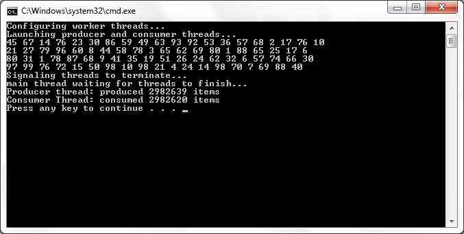

This sample demonstrates several threading techniques.
In Solution Explorer, right-click the ThreadStartStop project and click Set as StartUp Project.
On the Debug menu, click Start Without Debugging.
Repeat the preceding steps for ThreadPool, and ThreadSync.
Use the Change Directory command to change to the Threads directory.
Type the following:
cd ThreadStartStop csc ThreadStartStop.cs ThreadStartStop |
Type the following:
cd ..\ThreadPool csc ThreadPool.cs ThreadPool |
Type the following:
cd ..\ThreadSync csc ThreadSync.cs ThreadSync |
This sample demonstrates the following threading techniques. See Threading (C# Programming Guide) for more information.
Creating, launching, and terminating a thread
Using a thread pool
Thread synchronization and interaction
This sample code is provided to illustrate a concept and should not be used in applications or Web sites, as it may not illustrate the safest coding practices. Microsoft assumes no liability for incidental or consequential damages should the sample code be used for purposes other than as intended.

// Configure struct containing event information required
// for thread synchronization.
SyncEvents syncEvents = new SyncEvents();
// Generic Queue collection is used to store items to be
// produced and consumed. In this case 'int' is used.
Queue<int> queue = new Queue<int>();
// Create objects, one to produce items, and one to
// consume. The queue and the thread synchronization
// events are passed to both objects.
Console.WriteLine("Configuring worker threads...");
Producer producer = new Producer(queue, syncEvents);
Consumer consumer = new Consumer(queue, syncEvents);
// Create the thread objects for producer and consumer
// objects. This step does not create or launch the
// actual threads.
Thread producerThread = new Thread(producer.ThreadRun);
Thread consumerThread = new Thread(consumer.ThreadRun);
// Create and launch both threads.
Console.WriteLine("Launching producer and consumer threads...");
producerThread.Start();
consumerThread.Start();
// Configure struct containing event information required // for thread synchronization. SyncEvents syncEvents = new SyncEvents(); // Generic Queue collection is used to store items to be // produced and consumed. In this case 'int' is used. Queue<int> queue = new Queue<int>(); // Create objects, one to produce items, and one to // consume. The queue and the thread synchronization // events are passed to both objects. Console.WriteLine("Configuring worker threads..."); Producer producer = new Producer(queue, syncEvents); Consumer consumer = new Consumer(queue, syncEvents); // Create the thread objects for producer and consumer // objects. This step does not create or launch the // actual threads. Thread producerThread = new Thread(producer.ThreadRun); Thread consumerThread = new Thread(consumer.ThreadRun); // Create and launch both threads. Console.WriteLine("Launching producer and consumer threads..."); producerThread.Start(); consumerThread.Start();
For more information, see: